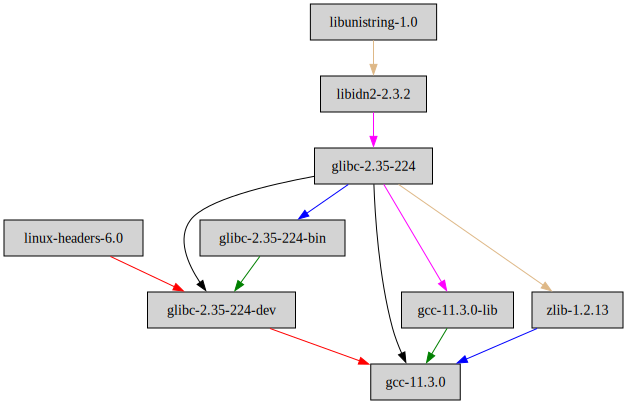
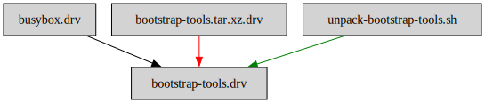
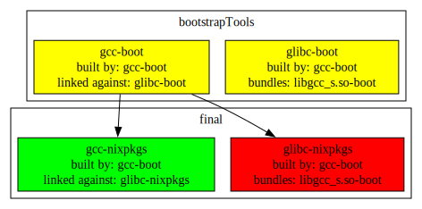
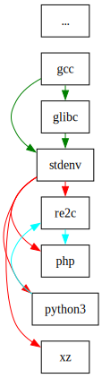
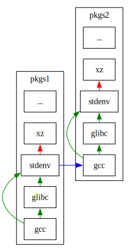

nixpkgs bootstrap deep dive
The problem
A while ago Thomas
noticed that
libgcc_s.so used by nixpkgs does not match gcc version it was
supposed to come with. Tl;DR of the issue:
aarch64usesgcc-11as a default compiler- but somehow default
libgcc_s.so(used by many c++ programs) comes fromgcc-9
This version skew causes issues because gcc-11 relies on symbols
exported from libgcc_s.so versions that were added after gcc-9
release. Example taken from Issue #201254:
#include <atomic>
int foo(int i) {
std::atomic<int> f(i);
return f.fetch_add(3);
}$ g++ --std=c++20 -c test.c -o test.o
$ g++ --std=c++20 -shared -Wl,-z,defs test.o -o libtest.so
ld: /build/test.o: in function `foo(int)':
test.cpp:(.text+0x2c): undefined reference to `__aarch64_ldadd4_acq_rel'
collect2: error: ld returned 1 exit statusSuch link errors are related to atomic operations not directly supported
by CPU. gcc-11 and later generates fallback code to call into
libgcc_s.so.
Bootstrap refresher
Not too long ago I wrote a bit about
nixpkgs bootstrap intro
in context of bugs related to glibc version lookup. High-level
overview presented there is mostly correct. But some details I got
wrong.
I’ll sort them out here to clarify why version skew happens and how
we could fix it using existing bootstrap framework in nixpkgs.
Bootstrap debugging tips
Before the dive into specifics of our issue let’s explore generic debugging tips to see how runtime and build-time dependencies are laid out.
Tip 1: stdenv.cc is the compiler wrapper used to compile apps:
$ nix-build -A stdenv.cc
/nix/store/wn31i3dzwahz6ccws8bs1nwyqrpgsvj7-gcc-wrapper-11.3.0
$ ls result/bin/
addr2line c++ cpp g++ ld nm ranlib strings
ar cc dwp gcc ld.bfd objcopy readelf strip
as c++filt elfedit gprof ld.gold objdump sizeIt’s called wrapper because gcc and g++ are shell scripts that
pass default locations to glibc locations and similar when call
actual gcc binary. That one hides in another package.
Tip 2: stdenv.cc.cc is the unwrapped compiler binary used by
stdenv.cc wrapper:
$ nix-build -A stdenv.cc.cc
/nix/store/sxdx80lmk4zkhb51f4x5dgqvxgmx55wl-gcc-11.3.0
$ ls result/bin/
c++ gcc-ranlib x86_64-unknown-linux-gnu-g++
cpp gcov x86_64-unknown-linux-gnu-gcc
g++ gcov-dump x86_64-unknown-linux-gnu-gcc-11.3.0
gcc gcov-tool x86_64-unknown-linux-gnu-gcc-ar
gcc-ar lto-dump x86_64-unknown-linux-gnu-gcc-nm
gcc-nm x86_64-unknown-linux-gnu-c++ x86_64-unknown-linux-gnu-gcc-ranlibTip 3: stdenv.__bootPackages refers to package set used to build
stdenv.
$ nix-build -A stdenv
/nix/store/cp65c8nk29qq5cl1wyy5qyw103cwmax7-stdenv-linux
$ nix-build -A stdenv.__bootPackages.stdenv
/nix/store/5ch2gc6i97iw7vlyksdhapqrh7bmiwwj-bootstrap-stage4-stdenv-linux
$ nix-build -A stdenv.__bootPackages.stdenv.__bootPackages.stdenv
/nix/store/f7vl4b9lwflwblqbf3g81xgjji1nldf7-bootstrap-stage3-stdenv-linux
$ nix-build -A stdenv.cc.cc
/nix/store/sxdx80lmk4zkhb51f4x5dgqvxgmx55wl-gcc-11.3.0
$ ./result/bin/gcc --version | head -n1
gcc (GCC) 11.3.0
$ nix-build -A stdenv.__bootPackages.stdenv.__bootPackages.stdenv.cc.cc
/nix/store/p4s4jf7aq6v6z9iazll1aiqwb34aqxq9-bootstrap-tools
$ ./result/bin/gcc --version | head -n1
gcc (GCC) 8.3.0Here we see that final stdenv.c is gcc-11. It is different from
stage3-stdenv which is gcc-8. This is an x86_64 machine, on
aarch64 you would see gcc-9 in stage3-stdenv.
Tip 4: nix-store --query --graph $pkg can tell us runtime depends
(closure) of a given package.
For example here is the runtime subset of all build-time depends used for final unwrapped compiler:
$ nix-store --query --graph $(nix-build -A stdenv.cc.cc) | dot -Tsvg > gcc-runtime.svg
Tip 5: nix-instantiate is useful to explore the build-time graph.
$ nix-store --query --graph $(nix-instantiate -A stdenv.__bootPackages.stdenv.__bootPackages.stdenv.cc.cc) |
dot -Tsvg > gcc-buildtime.svg
I picked bootstrap (prebuilt) gcc which uses 2 downloaded tarballs:
busyboxexecutablebootstrap-tools.tar.xzfull of executable tools
unpack-bootstrap-tools.sh is a shell script used to unpack and
relocate bootstrap-tools.tar.xz to final package output directory.
I did not pick final gcc as an example because it pulls in 300
dependencies including bootstrap gcc, 4 variants of binutils and
all their depends. Too large to be meaningful.
Breakage mechanics
Having glanced at debugging tools let’s get back to our libgcc_s.so.1
problem.
The version skew described in the beginning happens because
libgcc_s.so gets copied into glibc‘s output from gcc it was
compiled with. In fact all of glibc was compiled with bootstrapTools’
gcc-8 (and not nixpkgs’ gcc-11!):
$ nix-build -A glibc
/nix/store/ayfr5l52xkqqjn3n4h9jfacgnchz1z7s-glibc-2.35-224
$ strings ./result/lib/libgcc_s.so.1 | grep -F '(GNU)'
GCC: (GNU) 8.3.0
$ strings ./result/lib/libc.so.6 | grep -F '(GNU)'
GCC: (GNU) 8.3.0It would probably be not be a huge problem if bootstrap gcc was fresh
enough. So why not just update bootstrap gcc in
bootstrap-tools.tar.xz and be done with it?
It is feasible, but not very practical to do on a regular basis. It is
easy to do twice a year, but harder to do with each gcc update
nixpkgs sees.
Also having too fresh bootstrapTools is also a bit tricky as version
downgrades (if we chose to rollback nixpkgs) would also need some
care.
Unfortunately bootstrapTools frequently does not get updated for a few
years and libgcc_s.so is as outdated. Just rebuilding bootstrapTools
would fix the problem for this instance. Until next major libgcc_s.so
update. Not very predictable.
What we could do instead is to update gcc first and then build fresh
glibc.
Let’s see what dependency graph our bootstrap tower has. Can we spot the staleness problem just by looking at the dependency references?
Let’s focus on just gcc and glibc packages for now and ignore
everything else.
I suggest grepping through the build dependency graph to fish out only needed details.
nix-store --query --graph $(nix-instantiate -A stdenv) |
grep -P '((stdenv|bootstrap).*->.*(gcc|glibc-[^a-z]))|((gcc|glibc-[^a-z]).*->.*(stdenv|bootstrap))|[{}]' |
sed 's/"[0-9a-z]\{32\}-/"/g' | dot -Tsvg > gcc-and-glibc.svgIt’s a scary looking grep, but its idea is to find two types of arrows
in .dot formatted output:
- arrows from
stdenv(orbootstrap) togcc(orglibc): to find places where we decide to build newgcc(orglibc). - arrows and from
gcc(orglibc) tostdenv(orbootstrap): to find places where we decide to use some version ofgcc(orglibc).
This crude grep destroys some intermediary arrows and leaves nodes to
hang in the air. In reality all the stdenv nodes are chained in
sequence via compiler wrappers. But grep does capture most of important
details. Here is what .dot generated us
(enlarge the graph):
{kind=link}
The main takeaways from this picture are (aka the Legend):
glibcis built once (green box) using only bootstrapgccgccis built once (red box) using only bootstrapgcc- yellow boxes are bootstrap seed binaries (
gcc,glibcand many others)
Once again gcc-wrapper are just wrapper scripts that add
default paths to binutils, to glibc and similar when actual
gcc executable is called. Thus gcc-wrapper nodes don’t denote
gcc binary rebuild.
Now, if we look at the definition of our glibc expression
we will see how libgcc_s.so gets persisted there:
# When building glibc from bootstrap-tools, we need libgcc_s at RPATH for
# any program we run, because the gcc will have been placed at a new
# store path than that determined when built (as a source for the
# bootstrap-tools tarball)
# Building from a proper gcc staying in the path where it was installed,
# libgcc_s will now be at {gcc}/lib, and gcc's libgcc will be found without
# any special hack.
# TODO: remove this hack. Things that rely on this hack today:
# - dejagnu: during linux bootstrap tcl SIGSEGVs
# - clang-wrapper in cross-compilation
# Last attempt: https://github.com/NixOS/nixpkgs/pull/36948
preInstall = ''
if [ -f ${stdenv.cc.cc}/lib/libgcc_s.so.1 ]; then
mkdir -p $out/lib
cp ${stdenv.cc.cc}/lib/libgcc_s.so.1 $out/lib/libgcc_s.so.1
# the .so It used to be a symlink, but now it is a script
cp -a ${stdenv.cc.cc}/lib/libgcc_s.so $out/lib/libgcc_s.so
fi
'';The snippet copies a single file from stdenv.cc.cc attribute path
after glibc is built. In this case stdenv.cc.cc is gcc from
bootstrapTools via bootstrap-stage2-stdenv-linux.drv version of
stdenv. We can see this arrow on the picture as well.
To ease tracing of the origin for this file it would be better to place
a symlink here instead of a file copy. That way we would clearly see
undesired reference instead of resorting to strings call.
An ideal bootstrap
Clearly our bootstrap is problematic right now as it fails to link a
subset of binaries and seems to use suspiciously old gcc to build
glibc that almost any other package uses.
How would an ideal bootstrap look like?
Let’s settle down on more specific goals our bootstrap should achieve.
If our goal is to get something that is able to link binaries we could
just use bootstrapTools as our stdenv: no need to build anything,
gcc, glibc and libgcc_s.so are all consistent.
The only problem in using bootstrapTools directly is that patching
gcc or glibc will require rebuilding and re-uploading
bootstrapTools. It’s less convenient than just tweaking .nix files
but could be done as well. It’s not that much of added automation on
top of what hydra does today. The security aspect is more nuanced as
these binaries are the foundation of the rest of the build. If somebody
could sneak in malicious code there that would be problematic. Frequent
rebuilds would probably make it simpler (or not :).
Anyway, using bootstrapTools directly is not very convenient for local
toolchain development.
Thus we want something slightly more complicated: we need to build new
set of bootstrap tools using current nixpkgs expressions as target
versions of gcc, glibc and friends and use that instead. This
creates a logical recursion of bootstrapTools -> nixpkgs ->
new-bootstrapTools. But it’s not a fundamental one: we can do one
iteration (or, say, 10 iterations) of the recursion and declare final
result (whatever it is) a good enough fresh set of tools. This is, after
all, how most distributions build and provide toolchains nowadays.
So, when should we stop our rebuild recursion? How do we define good enough?
More specific goals of bootstrap process could be the following:
- Get rid of all the references (or copies) of
bootstrapToolsbinaries. - Avoid use of code generators emitted by
bootstrapToolsbinaries.
Goal 2 is a moral equivalent of [1.]: if bootstrapTools contained
a buggy code generator we would like to get rid of its effect by
rebuilding everything using nixpkgs versions of code generators.
As it stands today nixpkgs achieves [1.] but not [2.].
[2.] would help both in correctness and predictability of the final
result. At least we would not get version skews of various components.
On top of that new versions of code generators (like gcc or
binutils) frequently add extra features to the output useful for
performance, portability, safety or other.
From standpoint of “what built what” our current bootstrap process looks like that:

Arrows here denote code emitted by generator.
The picture can be summarised as: bootstrapTools build our code
generators (gcc) and generate code for glibc.
Ideal bootstrap instead could look like this:
Here cyan (rebuilt) and white (used as is) boxes all use the same
version of code generators and runtime libraries that nixpkgs
provides. Completely untangled from bootstrapTools!
The only change from current bootstrap process is an extra intermediate
gcc rebuild.
Other caveats
gcc is not the only code generator that we inherit from
bootstrapTools. We also need to track generators like binutils and
possibly other interpreters and non-trivial data manglers like awk,
bash, install, make and patchelf.
Of the list above binutils and patchelf are probably the most
interesting.
stdenv bootstrap tower
At least now we have a plan: add an extra gcc rebuild step into
bootstrap sequence. Sounds easy. How do we do that?
The rebuild stages are defined in pkgs/stdenv/linux/default.nix.
Let’s talk about stage and package structure a bit.
nixpkgs exposes users a set of packages to build. Most of these
packages use stdenv (or other packages) to construct build
environment. nixpkgs package structure is usually presented to
developers as something similar to the below:

The cycles in the graph of packages are forbidden (they require explicit
handling by duplicating packages). Most packages usually pull in stdenv
which exposes gcc in some form. Looks simple.
The only annoyance is that stdenv’s own packages like gcc and glibc do
take part in this graph.
This might mean that gcc and glibc don’t use final stdenv, and they
use previous instances of stdenv instead. Say, something along these lines:

This picture is a simple extension of previous picture. Given pkgs1 set of
packages we can construct pkgs2 by building packages in order:
- first
gcc - then
glibc - and finally build
xz(with newstdenv)
In reality each bootstrap step is split into a few smaller steps where
each handles its own part of stdenv update:
While this picture is closer to reality it still simplifies real graph a bit. Across all 4 (instead of previous 2) package sets we build the same 3 packages as in previous picture:
- first
gccinpkgs2 - then
glibcinpkgs3 - then
xzinpkgs4
It might take quite a bit of mental effort to chase through pointers. It is certainly harder to reason about it.
If you ever wondered how actual gcc attribute then is defined in
pkgs/top-level/all-packages.nix as:
inherit (let
num =
if (with stdenv.targetPlatform; isVc4 || libc == "relibc") then 6
else if (stdenv.targetPlatform.isAarch64 && stdenv.isLinux) then 9
else 11;
numS = toString num;
in {
gcc = pkgs.${"gcc${numS}"};
gccFun = callPackage (../development/compilers/gcc + "/${numS}");
}) gcc gccFun;
gcc-unwrapped = gcc.cc;
# ...
gcc11 = lowPrio (wrapCC (callPackage ../development/compilers/gcc/11 {
inherit noSysDirs;
reproducibleBuild = true;
profiledCompiler = false;
libcCross = if stdenv.targetPlatform != stdenv.buildPlatform then libcCross else null;
threadsCross = if stdenv.targetPlatform != stdenv.buildPlatform then threadsCross else {};
isl = if !stdenv.isDarwin then isl_0_20 else null;
}));If you are not very well versed in nix language the above is equivalent to:
gcc = pkgs.gcc11;
gcc-unwrapped = gcc.cc;
gcc11 = lowPrio (wrapCC (callPackage ../development/compilers/gcc/11 { ... }It’s a typically-looking package definition where package description
hides in pkgs/development/compilers/gcc/11/default.nix:
https://github.com/NixOS/nixpkgs/blob/master/pkgs/development/compilers/gcc/11/default.nix
So, back to our goal: we want to add an extra bootstrap step to build gcc.
Let’s trace through existing bootstrapTools’ gcc installation. How
does that get injected into our stdenv tower? It all starts from
bootstrap-stage0:
(prevStage: stageFun prevStage {
name = "bootstrap-stage0";
overrides = self: super: {
# We thread stage0's stdenv through under this name so downstream stages
# can use it for wrapping gcc too. This way, downstream stages don't need
# to refer to this stage directly, which violates the principle that each
# stage should only access the stage that came before it.
ccWrapperStdenv = self.stdenv;
# ...
gcc-unwrapped = bootstrapTools;
};
})Looks easy! We just define gcc-unwrapped to point to our
bootstrapTools prebuilt binaries and declare it a success. We also set
something called ccWrapperStdenv. These variables are used in
stageFun defined a few lines above bootstrap-stage0:
# This function builds the various standard environments used during
# the bootstrap. In all stages, we build an stdenv and the package
# set that can be built with that stdenv.
stageFun = prevStage:
{ name, overrides ? (self: super: {}), extraNativeBuildInputs ? [] }:
let
thisStdenv = import ../generic {
name = "${name}-stdenv-linux";
# ...
cc = if prevStage.gcc-unwrapped == null
then null
else lib.makeOverridable (import ../../build-support/cc-wrapper) {
name = "${name}-gcc-wrapper";
# ...
cc = prevStage.gcc-unwrapped;
bintools = prevStage.binutils;
libc = getLibc prevStage;
# ...
stdenvNoCC = prevStage.ccWrapperStdenv;
};
# ...
};
in {
inherit config overlays;
stdenv = thisStdenv;
};Here we define stdenv = thisStdenv populated with cc attribute that
refers prevStage.gcc-unwrapped from previous stage (and place it into
a wrapper).
bootstrap-stage0 was not too bad. Let’s have a peek at bootstrap-stage1:
# Create the first "real" standard environment. This one consists
# of bootstrap tools only, and a minimal Glibc to keep the GCC
# configure script happy.
# ...
(prevStage: stageFun prevStage {
name = "bootstrap-stage1";
# Rebuild binutils to use from stage2 onwards.
overrides = self: super: {
binutils-unwrapped = super.binutils-unwrapped.override {
enableGold = false;
};
inherit (prevStage)
ccWrapperStdenv
gcc-unwrapped coreutils gnugrep;
${localSystem.libc} = getLibc prevStage;
# A threaded perl build needs glibc/libpthread_nonshared.a,
# which is not included in bootstrapTools, so disable threading.
# This is not an issue for the final stdenv, because this perl
# won't be included in the final stdenv and won't be exported to
# top-level pkgs as an override either.
perl = super.perl.override { enableThreading = false; enableCrypt = false; };
};
})Here we use our stdenv to build perl, binutils-unwrapper
and their numerous dependencies.
What packages do we actually build using only stdenv-stage0?
We rely on packages’ dependencies as specified in their default.nix
files. Who knows what is there now. The simplest way to find out is to
query the build graph directly:
Here I assume that most of packages are pulling in
bootstrap-stage1-stdenv directly (without any intermediate steps).
$ nix-store --query --graph $(nix-instantiate -A stdenv) |
grep -P ".*bootstrap-stage1-stdenv.*->.*" | sed 's/"[0-9a-z]\{32\}-/"/g'
"bootstrap-stage1-stdenv-linux.drv" -> "perl-5.36.0.drv" [color = "black"];
"bootstrap-stage1-stdenv-linux.drv" -> "zlib-1.2.13.drv" [color = "green"];
"bootstrap-stage1-stdenv-linux.drv" -> "gnum4-1.4.19.drv" [color = "black"];
"bootstrap-stage1-stdenv-linux.drv" -> "expand-response-params.drv" [color = "magenta"];
"bootstrap-stage1-stdenv-linux.drv" -> "binutils-2.39.drv" [color = "green"];
"bootstrap-stage1-stdenv-linux.drv" -> "binutils-wrapper-2.39.drv" [color = "green"];
"bootstrap-stage1-stdenv-linux.drv" -> "bison-3.8.2.drv" [color = "burlywood"];
"bootstrap-stage1-stdenv-linux.drv" -> "gettext-0.21.drv" [color = "red"];
"bootstrap-stage1-stdenv-linux.drv" -> "xz-5.2.9.drv" [color = "burlywood"];
"bootstrap-stage1-stdenv-linux.drv" -> "bash-5.1-p16.drv" [color = "blue"];
"bootstrap-stage1-stdenv-linux.drv" -> "binutils-wrapper-2.39.drv" [color = "green"];
"bootstrap-stage1-stdenv-linux.drv" -> "texinfo-6.8.drv" [color = "green"];perl and binutils are here. But on top of that we also got zlib,
gnum4, expand-response-params, bison, gettext, xz, bash,
binutils-wrapper and texinfo. Curiously no python or make in the
list.
Now, if we do nothing special most of these dependencies will get
rebuilt on each of our 5 stages of bootstrap: our stdenv usually
changes on each step and normally you need local binutils-unwrapped
for each of them.
To avoid rebuilds of every single one of them we need to pick the packages and propagate them further. That is done by inheriting them from previous stage. Just like the cyan arrow on the picture above.
{kind=link}
Let’s peek at how bootstrap-stage2 does that:
# 2nd stdenv that contains our own rebuilt binutils and is used for
# compiling our own Glibc.
# ...
(prevStage: stageFun prevStage {
name = "bootstrap-stage2";
overrides = self: super: {
inherit (prevStage)
ccWrapperStdenv
gcc-unwrapped coreutils gnugrep
perl gnum4 bison;
# ...
};
})Note that xz or texinfo are not in the list. They will get rebuilt.
I think it’s an omission. Let’s see how many times do we rebuild, say,
xz:
$ nix-store --query --graph $(nix-instantiate -A stdenv) |
grep -P ".*bootstrap-stage.*-stdenv.*->.*xz-5.2.9"
"...-bootstrap-stage1-stdenv-linux.drv" -> "...aw8n-xz-5.2.9.drv" [color = "burlywood"];
"...-bootstrap-stage2-stdenv-linux.drv" -> "...ywnn-xz-5.2.9.drv" [color = "green"];
"...-bootstrap-stage3-stdenv-linux.drv" -> "...mmfc-xz-5.2.9.drv" [color = "burlywood"];
"...-bootstrap-stage4-stdenv-linux.drv" -> "...icqq-xz-5.2.9.drv" [color = "green"];4 times: In all 4 arrows have different store paths. In every single
stage we rebuild xz on and on. It’s very likely a bug. It’s a simple
tool and we could use just one version of it until the final rebuild.
Let’s do a dirty histogram of all the rebuilds we do. Maybe we have more of those?
$ nix-store --query --graph $(nix-instantiate -A stdenv) |
grep -P " -> " | awk '{print $3}' | sort -u |
sed 's/"[0-9a-z]\{32\}-/"/g' | sort | uniq -c | sort -n | awk '$1 > 1'
2 "autoconf-2.71.drv"
2 "automake-1.16.5.drv"
2 "bootstrap-stage1-stdenv-linux.drv"
2 "bootstrap-stage2-stdenv-linux.drv"
2 "bootstrap-stage4-stdenv-linux.drv"
2 "bzip2-1.0.8.drv"
2 "file-5.43.drv"
2 "help2man-1.49.2.drv"
2 "hook.drv"
2 "libtool-2.4.7.drv"
2 "patchelf-0.15.0.drv"
2 "perl5.36.0-gettext-1.07.drv"
3 "binutils-2.39.drv"
3 "binutils-wrapper-2.39.drv"
3 "expand-response-params.drv"
3 "gettext-0.21.drv"
3 "libxcrypt-4.4.33.drv"
3 "perl-5.36.0.drv"
3 "texinfo-6.8.drv"
3 "zlib-1.2.13.drv"
4 "bash-5.1-p16.drv"
4 "xz-5.2.9.drv"I’d say xz should follow bzip2 pattern of rebuilds. bash rebuild
count also looks excessive. So does binutils. All are good candidates
for cleanup.
Let’s move on to existing gcc rebuild to see if it follows the same
override pattern as bootstrapTools one. Its override happens in
bootstrap-stage3:
# Construct a third stdenv identical to the 2nd, except that this
# one uses the rebuilt Glibc from stage2. It still uses the recent
# binutils and rest of the bootstrap tools, including GCC.
# ...
(prevStage: stageFun prevStage {
name = "bootstrap-stage3";
overrides = self: super: rec {
inherit (prevStage)
ccWrapperStdenv
binutils coreutils gnugrep
perl patchelf linuxHeaders gnum4 bison libidn2 libunistring;
${localSystem.libc} = getLibc prevStage;
gcc-unwrapped =
let makeStaticLibrariesAndMark = pkg:
lib.makeOverridable (pkg.override { stdenv = self.makeStaticLibraries self.stdenv; })
.overrideAttrs (a: { pname = "${a.pname}-stage3"; });
in super.gcc-unwrapped.override {
# Link GCC statically against GMP etc. This makes sense because
# these builds of the libraries are only used by GCC, so it
# reduces the size of the stdenv closure.
gmp = makeStaticLibrariesAndMark super.gmp;
mpfr = makeStaticLibrariesAndMark super.mpfr;
libmpc = makeStaticLibrariesAndMark super.libmpc;
isl = makeStaticLibrariesAndMark super.isl_0_20;
# Use a deterministically built compiler
# see https://github.com/NixOS/nixpkgs/issues/108475 for context
reproducibleBuild = true;
profiledCompiler = false;
};
};
extraNativeBuildInputs = [ prevStage.patchelf ] ++
# Many tarballs come with obsolete config.sub/config.guess that don't recognize aarch64.
lib.optional (!localSystem.isx86 || localSystem.libc == "musl")
prevStage.updateAutotoolsGnuConfigScriptsHook;
})Apart from enabling static library builds it’s our typical gcc-unwrapped
definition.
Then in bootstrap-stage4 we explicitly define gcc attribute as a wrapper
against gcc-unwrapped from a previous stage:
# Construct a fourth stdenv that uses the new GCC. But coreutils is
# still from the bootstrap tools.
# ...
(prevStage: stageFun prevStage {
name = "bootstrap-stage4";
overrides = self: super: {
# Zlib has to be inherited and not rebuilt in this stage,
# because gcc (since JAR support) already depends on zlib, and
# then if we already have a zlib we want to use that for the
# other purposes (binutils and top-level pkgs) too.
inherit (prevStage) gettext gnum4 bison perl texinfo zlib linuxHeaders libidn2 libunistring;
${localSystem.libc} = getLibc prevStage;
binutils = super.binutils.override {
# Don't use stdenv's shell but our own
shell = self.bash + "/bin/bash";
# Build expand-response-params with last stage like below
buildPackages = {
inherit (prevStage) stdenv;
};
};
# force gmp to rebuild so we have the option of dynamically linking
# libgmp without creating a reference path from:
# stage5.gcc -> stage4.coreutils -> stage3.glibc -> bootstrap
gmp = lib.makeOverridable (super.gmp.override { stdenv = self.stdenv; }).overrideAttrs (a: { pname = "${a.pname}-stage4"; });
# To allow users' overrides inhibit dependencies too heavy for
# bootstrap, like guile: https://github.com/NixOS/nixpkgs/issues/181188
gnumake = super.gnumake.override { inBootstrap = true; };
gcc = lib.makeOverridable (import ../../build-support/cc-wrapper) {
nativeTools = false;
nativeLibc = false;
isGNU = true;
buildPackages = {
inherit (prevStage) stdenv;
};
cc = prevStage.gcc-unwrapped;
bintools = self.binutils;
libc = getLibc self;
inherit lib;
inherit (self) stdenvNoCC coreutils gnugrep;
shell = self.bash + "/bin/bash";
};
};
# ...
})We re-wrap binutils and gcc against previous stdenv. That is a bit
more complicated than our initial bootstrapTools dance. I think it’s
only needed to construct final gcc and binutils attributes. It’s not
crucial for bootstrap process but important for final package set.
Packages normally rely on stdenv.cc attribute as a compiler and don’t
usually refer gcc attribute itself directly.
Thus we have a pattern of how to splice an extra stage with gcc
rebuild:
- in our new stage we need to pass through all the tools next stage
inherits to avoid unnecessary rebuilds and we need to define
gcc-unwrapped. - in stage after we’ll get our result in
stdenvautomatically.
Simple!
First attempt at the override
The natural place to plug our gcc rebuild is between
bootstrap-stage1 (binutils-unwrapped rebuild) and bootstrap-stage2
(where we build special runtime dependencies for glibc).
I copied boostrap-stage2 into bootstrap-stage1.5-gcc-unwrapped
and added only gcc-unwrapped definition there:
--- a/pkgs/stdenv/linux/default.nix
+++ b/pkgs/stdenv/linux/default.nix
@@ -278,6 +278,73 @@ in
};
})
+ (prevStage: stageFun prevStage {
+ name = "bootstrap-stage1.5-gcc-unwrapped";
+
+ overrides = self: super: {
+ inherit (prevStage)
+ ccWrapperStdenv
+ coreutils gnugrep
+ perl gnum4 bison;
+
+ ${localSystem.libc} = getLibc prevStage;
+
+ gcc-unwrapped =
+ let makeStaticLibrariesAndMark = pkg:
+ lib.makeOverridable (pkg.override { stdenv = self.makeStaticLibraries self.stdenv; })
+ .overrideAttrs (a: { pname = "${a.pname}-stage3"; });
+ in super.gcc-unwrapped.override {
+ # Link GCC statically against GMP etc. This makes sense because
+ # these builds of the libraries are only used by GCC, so it
+ # reduces the size of the stdenv closure.
+ gmp = makeStaticLibrariesAndMark super.gmp;
+ mpfr = makeStaticLibrariesAndMark super.mpfr;
+ libmpc = makeStaticLibrariesAndMark super.libmpc;
+ isl = makeStaticLibrariesAndMark super.isl_0_20;
+ # Use a deterministically built compiler
+ # see https://github.com/NixOS/nixpkgs/issues/108475 for context
+ reproducibleBuild = true;
+ profiledCompiler = false;
+ };
+ };
+
+ # `libtool` comes with obsolete config.sub/config.guess that don't recognize Risc-V.
+ extraNativeBuildInputs =
+ lib.optional (localSystem.isRiscV) prevStage.updateAutotoolsGnuConfigScriptsHook;
+ })It’s a big but mechanical change. We need to pay some attention to
inherit (prevStage) ... to pass through enough dependencies to
avoid unnecessary rebuilds. I used histograms command above to check
if we are doing something reasonable.
Let’s try if it works!
$ nix build -f. stdenv
...
ld: dwp.o: in function
`__gnu_cxx::new_allocator<gold::Dwp_output_file::Contribution>
::allocate(unsigned long, void const*)':
/nix/store/...-gcc-11.3.0/include/c++/11.3.0/ext/new_allocator.h:116:
undefined reference to `std::__throw_bad_array_new_length()'
...
collect2: error: ld returned 1 exit status
...
For full logs, run 'nix log /nix/store/...-binutils-2.39.drv'.Didn’t work.
This is a typical build failure caused by mismatch between code
generated by g++ (gcc-11 in this case) and symbols provided by
libstdc++ (gcc-8 in this case). Outdated libstdc++ comes from
bootstrapTools’ /lib directory. The same directory where rest of
libraries sits.
Normally other distributions (and gcc’s default build system) use
version-specific paths to libstdc++, like .../lib/gcc/x86_64-pc-linux-gnu/11.3.0/libstdc++.so.
That way parallel gcc installs have a chance to keep their c++
business to themselves and not interfere with one another.
Let’s fix this error the similar way by moving it out of default lib
path:
--- a/pkgs/stdenv/linux/bootstrap-tools/scripts/unpack-bootstrap-tools.sh
+++ b/pkgs/stdenv/linux/bootstrap-tools/scripts/unpack-bootstrap-tools.sh
@@ -17,6 +17,15 @@ else
LD_BINARY=$out/lib/ld-*so.?
fi
+# path to version-specific libraries, like libstdc++.so
+LIBSTDCXX_SO_DIR=$(echo $out/lib/gcc/*/*)
+
+# Move version-specific libraries out to avoid library mix when we
+# upgrade gcc.
+# TODO(trofi): update bootstrap tarball script and tarballs to put them
+# into expected location directly.
+LD_LIBRARY_PATH=$out/lib $LD_BINARY $out/bin/mv $out/lib/libstdc++.* $LIBSTDCXX_SO_DIR/
+
# On x86_64, ld-linux-x86-64.so.2 barfs on patchelf'ed programs. So
# use a copy of patchelf.
LD_LIBRARY_PATH=$out/lib $LD_BINARY $out/bin/cp $out/bin/patchelf .
@@ -25,8 +34,8 @@ for i in $out/bin/* $out/libexec/gcc/*/*/*; do
if [ -L "$i" ]; then continue; fi
if [ -z "${i##*/liblto*}" ]; then continue; fi
echo patching "$i"
- LD_LIBRARY_PATH=$out/lib $LD_BINARY \
- ./patchelf --set-interpreter $LD_BINARY --set-rpath $out/lib --force-rpath "$i"
+ LD_LIBRARY_PATH=$out/lib:$LIBSTDCXX_SO_DIR $LD_BINARY \
+ ./patchelf --set-interpreter $LD_BINARY --set-rpath $out/lib:$LIBSTDCXX_SO_DIR --force-rpath "$i"
done
for i in $out/lib/librt-*.so $out/lib/libpcre*; doThe only binary using libstdc++ in bootstrapTools is patchelf. We
had to extend its RUNPATH as well.
Once we fixed that the next failure happens way later, in bootstrap-stage4-gcc:
../../gcc-11.3.0/gcc/ggc-common.c: In function 'void report_heap_memory_use()':
../../gcc-11.3.0/gcc/ggc-common.c:1018:23:
error: 'mallinfo2' was not declared in this scope; did you mean 'mallinfo'?
1018 | #define MALLINFO_FN mallinfo2
| ^~~~~~~~~
For full logs, run 'nix log /nix/store/..-gcc-11.3.0.drv'.mallinfo2 is a somewhat recent glibc symbol from glibc-2.33. Our
bootstrapTools’ glibc version is 2.27. Our nixpkgs glibc version
is 2.35.
bootstrap-stage4 should already have a nixpkgs glibc. Unless I
broke its wrapper registration after I rebuilt gcc.
Normally gcc should be reasonably portable across older glibc
versions (and even non-glibc).
Checking gcc’s source code it indeed looks reasonable:
// Somewhere in gcc/ggc-common.cc
// ...
void
report_heap_memory_use ()
{
#if defined(HAVE_MALLINFO) || defined(HAVE_MALLINFO2)
#ifdef HAVE_MALLINFO2
#define MALLINFO_FN mallinfo2
#else
#define MALLINFO_FN mallinfo
#endif
if (!quiet_flag)
fprintf (stderr, " {heap " PRsa (0) "}",
SIZE_AMOUNT (MALLINFO_FN ().arena));
#endif
}Let’s check its config.log to see why HAVE_MALLINFO2 was
detected as available.
I ran the stdenv build with --keep-failed to get full gcc’s
build tree around when it fails:
nix-build -A stdenv --keep-failed
...
note: keeping build directory '/tmp/nix-build-gcc-11.3.0.drv-1'
error: builder for '/nix/store/8vx2w68ihszs71kfysm145y71lkp79mj-gcc-11.3.0.drv' failed with exit code 2;
$ fgrep -A3 mallinfo2 /tmp/nix-build-gcc-11.3.0.drv-1/build/gcc/config.log
configure:10410: checking for mallinfo2
configure:10410: g++ -std=c++11 -o conftest -g -static-libstdc++ -static-libgcc conftest.cpp >&5
configure:10410: $? = 0
configure:10410: result: yes
$ fgrep TARGET_GLIBC /tmp/nix-build-gcc-11.3.0.drv-1/build/gcc/config.log
#define TARGET_GLIBC_MAJOR 2
#define TARGET_GLIBC_MINOR 35gcc and glibc both look fresh enough. That means I failed at
registering new glibc headers perhaps? Let’s check.
Making sure we test a reasonable attribute:
$ nix-build -A stdenv.__bootPackages.stdenv.cc.cc
...
../../gcc-11.3.0/gcc/ggc-common.c: In function 'void report_heap_memory_use()':
../../gcc-11.3.0/gcc/ggc-common.c:1018:23: error: 'mallinfo2' was not declared in this scope; did you mean 'mallinfo'?
1018 | #define MALLINFO_FN mallinfo2
| ^~~~~~~~~Diving into expression:
$ nix develop -i -f. stdenv.__bootPackages.stdenv.cc.cc
bash-5.1$ dev> unpackPhase
unpacking source archive /nix/store/lask01x6hyji5sd06f6yc9nz3rxcf2ia-gcc-11.3.0.tar.xz
source root is gcc-11.3.0
setting SOURCE_DATE_EPOCH to timestamp 1650529937 of file gcc-11.3.0/MD5SUMS
bash-5.1$ dev>cd gcc-11.3.0
bash-5.1$ dev>configurePhase
fixing libtool script ./libgo/config/ltmain.sh
...
config.status: creating Makefile
bash-5.1$ dev>buildPhase
...
In file included from ../.././gcc/ggc-common.c:25:
../.././gcc/ggc-common.c: In function ‘void report_heap_memory_use()’:
../.././gcc/ggc-common.c:1018:23: error: ‘mallinfo2’ was not declared in this scope; did you mean ‘mallinfo’?
1018 | #define MALLINFO_FN mallinfo2
| ^~~~~~~~~
...
make[3]: Leaving directory '/home/slyfox/dev/git/nixpkgs-staging-bootstrap/gcc-11.3.0/host-x86_64-unknown-linux-gnu/gcc'
make[2]: *** [Makefile:4793: all-stage1-gcc] Error 2Success! We got the same build failure!
Now we can run the command manually to explore its breakage:
bash-5.1$ dev>cd host-x86_64-unknown-linux-gnu/gcc
bash-5.1$ dev>g++ -std=c++11 -fno-PIE -c -g -DIN_GCC -fno-exceptions -fno-rtti -fasynchronous-unwind-tables -W -Wall -Wno-narrowing -Wwrite-strings -Wcast-qual -Wno-error=format-diag -Wno-format -Wmissing-format-attribute -Woverloaded-virtual -pedantic -Wno-long-long -Wno-variadic-macros -Wno-overlength-strings -fno-common -DHAVE_CONFIG_H -I. -I. -I../.././gcc -I../.././gcc/. -I../.././gcc/../include -I../.././gcc/../libcpp/include -I../.././gcc/../libcody -I/nix/store/14vlw51dg2n6kb0r6qgb077v6ryb638g-gmp-with-cxx-stage3-6.2.1-dev/include -I/nix/store/kfk03b53z547gydfslv474sfarza17sm-mpfr-stage3-4.1.1-dev/include -I/nix/store/l4x6j77hakm6lwgzvc50hb4i45ck92a0-libmpc-stage3-1.2.1/include -I../.././gcc/../libdecnumber -I../.././gcc/../libdecnumber/bid -I../libdecnumber -I../.././gcc/../libbacktrace -I/nix/store/qjdmf5pwdlgzf73lkkvpxm9s6l32wf2f-isl-stage3-0.20/include -o ggc-common.o -MT ggc-common.o -MMD -MP -MF ./.deps/ggc-common.TPo ../.././gcc/ggc-common.c
In file included from ../.././gcc/ggc-common.c:25:
../.././gcc/ggc-common.c: In function ‘void report_heap_memory_use()’:
../.././gcc/ggc-common.c:1018:23: error: ‘mallinfo2’ was not declared in this scope; did you mean ‘mallinfo’?
1018 | #define MALLINFO_FN mallinfo2
| ^~~~~~~~~
../.././gcc/system.h:1262:26: note: in definition of macro ‘SIZE_SCALE’
1262 | #define SIZE_SCALE(x) (((x) < 10 * ONE_K \
| ^
../.././gcc/ggc-common.c:1024:14: note: in expansion of macro ‘SIZE_AMOUNT’
1024 | SIZE_AMOUNT (MALLINFO_FN ().arena));
| ^~~~~~~~~~~
../.././gcc/ggc-common.c:1024:27: note: in expansion of macro ‘MALLINFO_FN’
1024 | SIZE_AMOUNT (MALLINFO_FN ().arena));
| ^~~~~~~~~~~Let’s check include order by adding ‘-v’ option:
bash-5.1$ dev>g++ -v -std=c++11 -fno-PIE ... ../.././gcc/ggc-common.c
#include <...> search starts here:
.
../.././gcc
../.././gcc/../include
../.././gcc/../libcpp/include
../.././gcc/../libcody
../.././gcc/../libdecnumber
../.././gcc/../libdecnumber/bid
../libdecnumber
../.././gcc/../libbacktrace
/run/current-system/sw/include
/nix/store/xa81wrm1vpbfy090448mjsg6zh5sifbb-gettext-0.21/include
/nix/store/14vlw51dg2n6kb0r6qgb077v6ryb638g-gmp-with-cxx-stage3-6.2.1-dev/include
/nix/store/kfk03b53z547gydfslv474sfarza17sm-mpfr-stage3-4.1.1-dev/include
/nix/store/gdkid16s49qn2g5cbyr9xq6yqj55xgk0-gmp-with-cxx-6.2.1-dev/include
/nix/store/l4x6j77hakm6lwgzvc50hb4i45ck92a0-libmpc-stage3-1.2.1/include
/nix/store/v6za3bc8gpddggqgivjs1adzgc9c86mz-libxcrypt-4.4.33/include
/nix/store/qjdmf5pwdlgzf73lkkvpxm9s6l32wf2f-isl-stage3-0.20/include
/nix/store/5hzpyz2m5ipsdsv017y6pzgg39p10ici-zlib-1.2.13-dev/include
/nix/store/x6p2wal4jlvqky4bh69447dbv1fndr0m-gcc-11.3.0/lib/gcc/x86_64-unknown-linux-gnu/11.3.0/../../../../include/c++/11.3.0
/nix/store/x6p2wal4jlvqky4bh69447dbv1fndr0m-gcc-11.3.0/lib/gcc/x86_64-unknown-linux-gnu/11.3.0/../../../../include/c++/11.3.0/x86_64-unknown-linux-gnu
/nix/store/x6p2wal4jlvqky4bh69447dbv1fndr0m-gcc-11.3.0/lib/gcc/x86_64-unknown-linux-gnu/11.3.0/../../../../include/c++/11.3.0/backward
/nix/store/x6p2wal4jlvqky4bh69447dbv1fndr0m-gcc-11.3.0/lib/gcc/x86_64-unknown-linux-gnu/11.3.0/include
/nix/store/x6p2wal4jlvqky4bh69447dbv1fndr0m-gcc-11.3.0/include
/nix/store/x6p2wal4jlvqky4bh69447dbv1fndr0m-gcc-11.3.0/lib/gcc/x86_64-unknown-linux-gnu/11.3.0/include-fixed
/nix/store/nm7fxi26avig3arwpasfy0avfwyb41i3-bootstrap-stage0-glibc-bootstrap/include
/nix/store/jn50ph1kl1h9x4qjs6hd6944afijaadh-glibc-2.35-224-dev/includeLast two lines are the culprit: we see both headers from bootstrap
...-bootstrap-stage0-glibc-bootstrap/include (goes first) and from
...-glibc-2.35-224-dev/include (goes second).
That is part of our problem. It would not be too bad if this include
order was consistent across compiler calls and we would use bootstrap
glibc consistently.
glibc-bootstrap header lookup path was embedded into gcc when we
built it at bootstrap-stage1.5 step.
Build log for that gcc contains
--with-native-system-header-dir=/nix/store/nm7fxi26avig3arwpasfy0avfwyb41i3-bootstrap-stage0-glibc-bootstrap/include
reference. Ideally we should have a way to make it lower priority than
/nix/store/jn50ph1kl1h9x4qjs6hd6944afijaadh-glibc-2.35-224-dev/include.
-I inserts headers too early: it prepends fixincludes and
gcc-wrapped headers. -idirafter inserts headers too late: after an
existing ...-bootstrap-stage0-glibc-bootstrap/include entry.
How can we do something in the middle?
Luckily there is a workaround: if we pass --sysroot=... to the
compiler it will throw away default --with-native-system-header-dir
value as if it was never passed. And it also keeps the rest of includes:
fixincludes, c++-headers and so on.
Thus the hack:
--- a/pkgs/build-support/cc-wrapper/default.nix
+++ b/pkgs/build-support/cc-wrapper/default.nix
@@ -336,7 +336,7 @@ stdenv.mkDerivation {
touch "$out/nix-support/libc-ldflags"
echo "-B${libc_lib}${libc.libdir or "/lib/"}" >> $out/nix-support/libc-crt1-cflags
'' + optionalString (!(cc.langD or false)) ''
- echo "-idirafter ${libc_dev}${libc.incdir or "/include"}" >> $out/nix-support/libc-cflags
+ echo "--sysroot=/nix/dir/does/not/exist -idirafter ${libc_dev}${libc.incdir or "/include"}" >> $out/nix-support/libc-cflags
'' + optionalString (isGNU && (!(cc.langD or false))) ''
for dir in "${cc}"/lib/gcc/*/*/include-fixed; do
echo '-idirafter' ''${dir} >> $out/nix-support/libc-cflagsWith the above I could build stdenv!
$ nix build -f. stdenvYay?
Let’s build something more substantial:
nix-build -A libffi
error: builder for '/nix/store/dsi4dkc04wgcz5fr0z1zrn92269g03zd-dejagnu-1.6.3.drv' failed with exit code 2;
last 10 log lines:
>
> # of expected passes 300
> DejaGnu version 1.6.3
> Expect version 5.45.4
> Tcl version 8.6
>
> /nix/store/jkk3n9lgqryg76w103ix62gxh32b4ywa-bash-5.2-p15/bin/bash: line 4: 2854 Aborted (core dumped) ../runtest --tool $tool --srcdir $srcdir
> make[1]: *** [Makefile:1097: check-DEJAGNU] Error 1
> make[1]: Leaving directory '/build/dejagnu-1.6.3/build'
> make: *** [Makefile:1307: check-am] Error 2
For full logs, run 'nix log /nix/store/dsi4dkc04wgcz5fr0z1zrn92269g03zd-dejagnu-1.6.3.drv'.
error: 1 dependencies of derivation '/nix/store/y2a8jwf1fx3vjnfwnayrj7yqcpb3r6gr-libffi-3.4.4.drv' failed to buildThe crash fails due to missing libgcc_s.so in glibc’s output:
$ nix-build -A glibc
$ ls result/lib/libgcc_s.so
ls: cannot access 'result/lib/libgcc_s.so': No such file or directoryBut it was there before. And caused us all sorts of problems.
Adding a bit of logging to see if the glibc file copy hook executed
at all:
--- a/pkgs/development/libraries/glibc/default.nix
+++ b/pkgs/development/libraries/glibc/default.nix
@@ -75,6 +75,9 @@ callPackage ./common.nix { inherit stdenv; } {
# - clang-wrapper in cross-compilation
# Last attempt: https://github.com/NixOS/nixpkgs/pull/36948
preInstall = ''
+ echo "We are in preInstall hook. Does ${stdenv.cc.cc} provide a libgcc?"
+ ls -l ${stdenv.cc.cc}/lib
+
if [ -f ${stdenv.cc.cc}/lib/libgcc_s.so.1 ]; then
mkdir -p $out/lib
cp ${stdenv.cc.cc}/lib/libgcc_s.so.1 $out/lib/libgcc_s.so.1Hook did execute and has shown no files there. No copying happens
because those libraries hide in a non-default .lib output of
stdenv.cc.cc:
$ nix-build -A stdenv.cc.cc
/nix/store/sxdx80lmk4zkhb51f4x5dgqvxgmx55wl-gcc-11.3.0
$ nix-build -A stdenv.cc.cc.lib
/nix/store/wprxx5zkkk13hpj6k1v6qadjylh3vq9m-gcc-11.3.0-lib
$ ls /nix/store/sxdx80lmk4zkhb51f4x5dgqvxgmx55wl-gcc-11.3.0/lib
gcc libasan_preinit.o libcc1.a libgomp.spec libitm.spec liblsan_preinit.o libsanitizer.spec libssp_nonshared.a libstdc++fs.a libtsan.a libubsan.a
libasan.a libatomic.a libgomp.a libitm.a liblsan.a libquadmath.a libssp.a libstdc++.a libsupc++.a libtsan_preinit.o
$ ls /nix/store/wprxx5zkkk13hpj6k1v6qadjylh3vq9m-gcc-11.3.0-lib/lib
libasan.la libatomic.so libcc1.so.0 libgomp.so libitm.so.1 liblsan.so.0.0.0 libssp.la libstdc++fs.la libstdc++.so.6.0.29-gdb.py libtsan.so.0.0.0
libasan.so libatomic.so.1 libcc1.so.0.0.0 libgomp.so.1 libitm.so.1.0.0 libquadmath.la libssp_nonshared.la libstdc++.la libsupc++.la libubsan.la
libasan.so.6 libatomic.so.1.2.0 libgcc_s.so libgomp.so.1.0.0 liblsan.la libquadmath.so libssp.so libstdc++.so libtsan.la libubsan.so
libasan.so.6.0.0 libcc1.la libgcc_s.so.1 libitm.la liblsan.so libquadmath.so.0 libssp.so.0 libstdc++.so.6 libtsan.so libubsan.so.1
libatomic.la libcc1.so libgomp.la libitm.so liblsan.so.0 libquadmath.so.0.0.0 libssp.so.0.0.0 libstdc++.so.6.0.29 libtsan.so.0 libubsan.so.1.0.0It happened to work because bootstrapTools is a derivation with single
out output and gcc from nixpkgs has slightly different structure.
Thus making the copy hack more portable:
--- a/pkgs/development/libraries/glibc/default.nix
+++ b/pkgs/development/libraries/glibc/default.nix
@@ -75,11 +75,11 @@ callPackage ./common.nix { inherit stdenv; } {
# - clang-wrapper in cross-compilation
# Last attempt: https://github.com/NixOS/nixpkgs/pull/36948
preInstall = ''
- if [ -f ${stdenv.cc.cc}/lib/libgcc_s.so.1 ]; then
+ if [ -f ${lib.getLib stdenv.cc.cc}/lib/libgcc_s.so.1 ]; then
mkdir -p $out/lib
- cp ${stdenv.cc.cc}/lib/libgcc_s.so.1 $out/lib/libgcc_s.so.1
+ cp ${lib.getLib stdenv.cc.cc}/lib/libgcc_s.so.1 $out/lib/libgcc_s.so.1
# the .so It used to be a symlink, but now it is a script
- cp -a ${stdenv.cc.cc}/lib/libgcc_s.so $out/lib/libgcc_s.so
+ cp -a ${lib.getLib stdenv.cc.cc}/lib/libgcc_s.so $out/lib/libgcc_s.so
fi
'';Trying again:
$ ls $(nix-build -A glibc)/lib/libgcc_s.so.1
...
/nix/store/li0dy2746f4731kd15y76qcr072b0szp-glibc-2.35-224/lib/libgcc_s.so.1At last!
There is one minor annoyance we need to sort out: libgcc_s.so.1 remembers
glibc it was linked against in its RUNPATH:
$ readelf -aW $(nix-build -A glibc)/lib/libgcc_s.so.1 | fgrep RUNPATH
0x000000000000001d (RUNPATH) Library runpath:
[/nix/store/nm7fxi26avig3arwpasfy0avfwyb41i3-bootstrap-stage0-glibc-bootstrap/lib]It should refer instead to glibc we just built. Let’s clobber the runpath:
--- a/pkgs/development/libraries/glibc/default.nix
+++ b/pkgs/development/libraries/glibc/default.nix
@@ -80,6 +80,9 @@ callPackage ./common.nix { inherit stdenv; } {
cp ${lib.getLib stdenv.cc.cc}/lib/libgcc_s.so.1 $out/lib/libgcc_s.so.1
# the .so It used to be a symlink, but now it is a script
cp -a ${lib.getLib stdenv.cc.cc}/lib/libgcc_s.so $out/lib/libgcc_s.so
+ # wipe out reference to previous libc it was built against
+ chmod +w $out/lib/libgcc_s.so.1
+ patchelf --set-rpath $out/lib $out/lib/libgcc_s.so.1
fi
'';It’s a safe operation in this case as we simulate glibc binary upgrade.
As glibc is backwards compatible it should not cause issues.
And in practice libgcc_s.so.1 has almost no code that depends on glibc.
Now it looks better:
$ readelf -aW $(nix-build -A glibc)/lib/libgcc_s.so.1 | fgrep RUNPATH
...
0x000000000000001d (RUNPATH) Library runpath:
[/nix/store/mjf0zgkdd7prfaqh1y00q4xmphmz87p5-glibc-2.35-224/lib]After that I was able to build full stdenv and a few c++ programs.
Proposed the change as PR #209063.
The clang wrapper
Surely done now?!
Overnight I ran the build against my whole set of system packages. Most
of them succeeded, but vte failed as:
> C compiler for the host machine: clang (clang 11.1.0 "clang version 11.1.0")
> C linker for the host machine: clang ld.bfd 2.39
>
> meson.build:17:0: ERROR: Compiler clang++ can not compile programs.
>
> A full log can be found at /build/vte-0.70.2/build/meson-logs/meson-log.txt
For full logs, run 'nix log /nix/store/rj77v58780gsrf38pi6qxjs89d4lrf6p-vte-0.70.2.drv'.Apparently the --sysroot=... hack changed search path in clang from
native paths to cross paths:
$ printf "int main(){}" | clang++ -x c++ -
$ printf "int main(){}" | clang++ --sysroot=/ -x c++ -
$ printf "int main(){}" | clang++ --sysroot=/does/not/exist -x c++ -
ld: cannot find -lstdc++: No such file or directoryHere is the patch lookup change behaviour. Good case:
$ printf "int main(){}" | clang++ -x c++ - -Wl,--verbose |& grep -F stdc++
attempt to open /nix/store/...-glibc-2.35-224/lib/libstdc++.so failed
attempt to open /nix/store/...-glibc-2.35-224/lib/libstdc++.a failed
attempt to open /nix/store/...-gcc-11.3.0/lib/gcc/x86_64-unknown-linux-gnu/11.3.0/libstdc++.so failed
attempt to open /nix/store/...-gcc-11.3.0/lib/gcc/x86_64-unknown-linux-gnu/11.3.0/libstdc++.a failed
attempt to open /nix/store/...-gcc-11.3.0-lib/x86_64-unknown-linux-gnu/lib/libstdc++.so failed
attempt to open /nix/store/...-gcc-11.3.0-lib/x86_64-unknown-linux-gnu/lib/libstdc++.a failed
attempt to open /nix/store/...-clang-11.1.0-lib/lib/libstdc++.so failed
attempt to open /nix/store/...-clang-11.1.0-lib/lib/libstdc++.a failed
attempt to open /nix/store/...-gcc-11.3.0/lib64/gcc/x86_64-unknown-linux-gnu/11.3.0/libstdc++.so failed
attempt to open /nix/store/...-gcc-11.3.0/lib64/gcc/x86_64-unknown-linux-gnu/11.3.0/libstdc++.a failed
attempt to open /nix/store/...-gcc-11.3.0/lib64/gcc/x86_64-unknown-linux-gnu/11.3.0/../../../../lib64/libstdc++.so failed
attempt to open /nix/store/...-gcc-11.3.0/lib64/gcc/x86_64-unknown-linux-gnu/11.3.0/../../../../lib64/libstdc++.a succeeded
/nix/store/...-gcc-11.3.0/lib64/gcc/x86_64-unknown-linux-gnu/11.3.0/../../../../lib64/libstdc++.aNote that clang++ does try target-specific x86_64-unknown-linux-gnu
paths first. But then falls backs to generic paths.
Bad case:
$ printf "int main(){}" | clang++ --sysroot=/does/not/exist -x c++ - -Wl,--verbose |& grep -F stdc++
attempt to open /nix/store/...-glibc-2.35-224/lib/libstdc++.so failed
attempt to open /nix/store/...-glibc-2.35-224/lib/libstdc++.a failed
attempt to open /nix/store/...-gcc-11.3.0/lib/gcc/x86_64-unknown-linux-gnu/11.3.0/libstdc++.so failed
attempt to open /nix/store/...-gcc-11.3.0/lib/gcc/x86_64-unknown-linux-gnu/11.3.0/libstdc++.a failed
attempt to open /nix/store/...-gcc-11.3.0-lib/x86_64-unknown-linux-gnu/lib/libstdc++.so failed
attempt to open /nix/store/...-gcc-11.3.0-lib/x86_64-unknown-linux-gnu/lib/libstdc++.a failed
attempt to open /nix/store/...-clang-11.1.0-lib/lib/libstdc++.so failed
attempt to open /nix/store/...-clang-11.1.0-lib/lib/libstdc++.a failed
attempt to open /nix/store/...-gcc-11.3.0/lib64/gcc/x86_64-unknown-linux-gnu/11.3.0/libstdc++.so failed
attempt to open /nix/store/...-gcc-11.3.0/lib64/gcc/x86_64-unknown-linux-gnu/11.3.0/libstdc++.a failed
attempt to open /nix/store/...-binutils-2.39/x86_64-unknown-linux-gnu/lib64/libstdc++.so failed
attempt to open /nix/store/...-binutils-2.39/x86_64-unknown-linux-gnu/lib64/libstdc++.a failed
attempt to open /nix/store/...-binutils-2.39/lib64/libstdc++.so failed
attempt to open /nix/store/...-binutils-2.39/lib64/libstdc++.a failed
attempt to open /nix/store/...-binutils-2.39/x86_64-unknown-linux-gnu/lib/libstdc++.so failed
attempt to open /nix/store/...-binutils-2.39/x86_64-unknown-linux-gnu/lib/libstdc++.a failed
attempt to open /nix/store/...-binutils-2.39/lib/libstdc++.so failed
attempt to open /nix/store/...-binutils-2.39/lib/libstdc++.a failed
/nix/store/...-binutils-2.39/bin/ld: cannot find -lstdc++: No such file or directoryIt’s roughly the same search order, but generic paths are not looked up.
I think it’s a somewhat minor clang bug. --sysroot is not about a
different target but about different offset for system library locations.
It should not affect compiler-specific library locations even if these
libraries are from gcc compiler and not clang.
But then again nixpkgs has its own slightly deviating notion of what
is cross-compiling compared other distributions. We could say that
nixpkgs has empty sysroot and always passes all the library and
include paths explicitly.
We can safely work around lookup paths by adding $target -> . symlink
to gcc to simulate cross case:
--- a/pkgs/development/compilers/gcc/11/default.nix
+++ b/pkgs/development/compilers/gcc/11/default.nix
@@ -221,6 +221,7 @@ stdenv.mkDerivation ({
};
targetConfig = if targetPlatform != hostPlatform then targetPlatform.config else null;
+ targetPlatformConfig = targetPlatform.config;
buildFlags = optional
(targetPlatform == hostPlatform && hostPlatform == buildPlatform)
diff --git a/pkgs/development/compilers/gcc/builder.sh b/pkgs/development/compilers/gcc/builder.sh
index 113bd83ea53..71a997a7df9 100644
--- a/pkgs/development/compilers/gcc/builder.sh
+++ b/pkgs/development/compilers/gcc/builder.sh
@@ -203,6 +203,17 @@ preInstall() {
ln -s lib "$out/${targetConfig}/lib32"
ln -s lib "${!outputLib}/${targetConfig}/lib32"
fi
+
+ # cc-wrappers uses --sysroot=/nix/store/does/not/exist as a way to
+ # drop default sysheaders search path. Unfortunately that switches
+ # clang++ into searching libraries in gcc in cross-compiler paths:
+ # from ${!outputLib}/lib (native)
+ # to ${!outputLib}/${targetPlatformConfig}/lib
+ # We create the symlink to make both native and cross paths
+ # available even if the toolchain is not the cross-compiler.
+ if [ ! -e ${!outputLib}/${targetPlatformConfig} ] ; then
+ ln -s . ${!outputLib}/${targetPlatformConfig}
+ fi
}Are we done yet?
We managed to update libgcc_s.so.1 in glibc to match default version
of gcc used by nixpkgs, but there is one minor catch: we built it
against bootstrapTools’ glibc. Or more specifically here is the
current layout:
- good: it is built as part of
nixpkgsgcc(and bynixpkgsgccas part of bootstrap thatgccpackage does internally). - good: it is built by
nixpkgsbinutils(with help ofgasandld) - suboptimal: it is linked against
bootstrapTools’glibc, which means that:- minor: it is linked against symbol versions defined by
libc.so.6 - medium: it is linked against
bootstrapTools’ glibc’s startup object files:crti.o: trivial_init/_finiglobal constructor handlingcrtn.o: trivial.init/.finisections for global constructorslibc_nonshared.a: small amount of target-specific stubs that refer__dso_handleor really dislike dynamic relocations:atexit,at_quick_exit,__pthread_atfork,__stack_chk_fail_local.
- minor: it is linked against symbol versions defined by
Of all the above libc_nonshared.a is mildly annoying. That should not
cause any problems as glibc allows upgrades of libc.so.6 without
breaking already linked libraries or executables. But it’s still a
problem of reliance on a tiny bit of bootstrapTools code.
Ideally I would like to delete libgcc_s.so.1 out of glibc’s lib/
directory entirely and it will solve this problem completely.
I’m not sure how exactly do it just yet, but I have a vague idea.
A while ago I wondered why cross-compiled glibc was missing
libgcc_s.so.1 while native had it. Now it’s clear: it’s an unexpected
native/cross difference in gcc.lib
library path
(and also
manual hook removal).
Once the main change lands I should be able to fix it as well one way or
another.
Thus no, we are not done yet. But it can wait when changes derived here
will land in nixpkgs. It looks like a clear improvement.
Next steps
I tried to understand nixpkgs bootstrap process in depth and its
relation to the toolchain setup a few times in the past:
- to sort out
glibcobjects mismatch (landed) - to fix
binutilsLTO plumbing (failed, needs more research) - to sort
muslinclude order (pending, needs more research) - to fix incomplete
mingwlibrary list (pending, needs more research) - to fix
include-what-you-useheaders path (pending, needs more research)
I failed more frequently than I succeeded.
Until today I never felt I quite grasped the details. There were
always minor things I did not look at: how does nixpkgs define
include header order? How does it track what are compiler-specific
libraries and what are libc-specific ones? Does it care? And other ones
like that. This time I managed to uncover almost all of that.
In most of the cases above it’s very clear why things are broken and why
they usually work in other distributions. The answer is almost always:
default paths have reasonable values there and nixpkgs does not use
default paths machinery. I always felt nixpkgs way of setting paths is
a bit broken. Now I have some evidence how exactly it is broken. That
gives me a hope I can amend at least part of it and eventually fix the
issues above without resorting to hacks like --sysroot=....
Still unfixed lower hanging fruits are:
- reduction of needless rebuild redundancy of
binutilsand other tools tools used in bootstrap. - static build of
gccdependencies also looks like a workaround ofbootstrapToolsplacing everything into one directory
Parting words
nixpkgs bootstrap process is simple at a high level: we build gcc,
glibc and friends enough times to declare the result stable enough.
When we don’t expect future rebuilds to change the output we declare
success.
The simplest way to explore bootstrap dependencies is probably to grep
and render parts of the graph produced by
nix-store --query --graph $(nix-build -A stdenv.cc.cc).
The precise mechanics of it are somewhat involved due to toolchain specifics but not too complicated.
The bootstrap is a bit fragile as nixpkgs assumes that it should
be feasible to swap glibc from under active toolchain by redirecting
headers. It could be solved by another round of rebuilds instead of
using less known compiler options. Or by using path priority override
closer to what vanilla gcc does (I still did not find best options for
that).
Along the way I found a few minor infelicities in nixpkgs:
- inconsistent
libgcc_s.so.1copying: PR #209055 libstdc++search path pollution inbootstrapTools: PR #209054- missing cross-link for native toolchains: PR #209153
And in the end I ended up with PR #209063
to get libgcc_s.so.1 up to date enough.
Initially I thought that adding one gcc rebuild is an easy problem.
I tried adding magic lines to pkgs/stdenv/linux/default.nix a few
times and failed. I did not feel I could make it work.
Instead of giving up I started this post. I logged what was failing and
why I think should be fixed to make it work. It took me 4 days to finish
it! I got libgcc_s.so.1 updated in the end!
Here is the final bootstrap tree I arrived at (enlarge):
{kind=link}
$ nix-store --query --graph $(nix-instantiate -A stdenv) |
grep -vP '[.](sh|tar|bash|patch|c|diff)|bash52-0|wrapper|hook|expand-response-params' |
dot -Tsvg > /tmp/a.svg; firefox /tmp/a.svgHave fun!